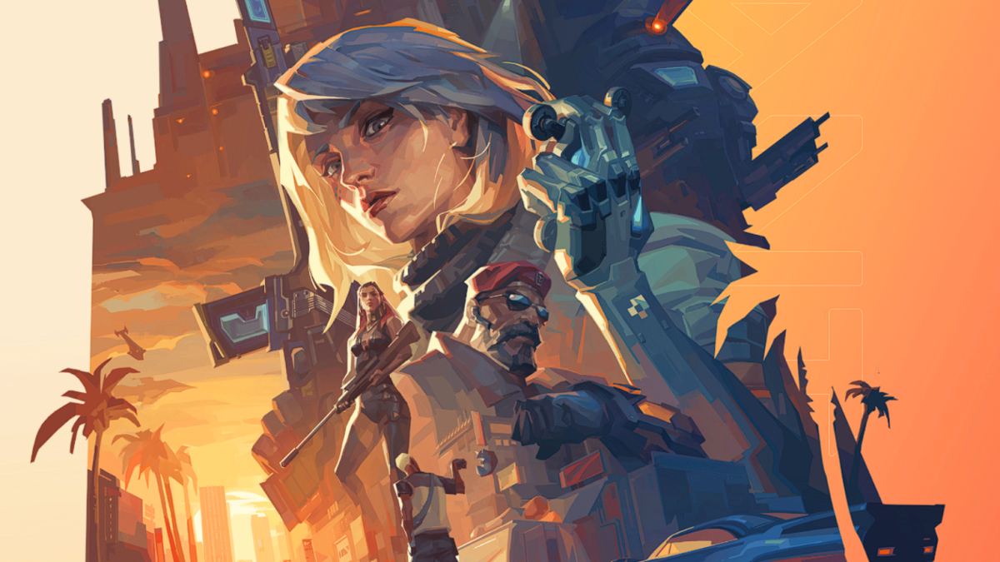

No tienes ningun mensaje.
Cuando llegue tu primer mensaje, recibiras una notificacion.

Cuando llegue tu primer mensaje, recibiras una notificacion.
con más de 91.000 seguidores en su comunidad, es la streamer cruceña más fuera de lo común teniendo en cuenta que el contenido que sube es puramente «cotorreo» con los usuarios de su comunidad en Twitch, desde dar consejos a problemas del día a día a sus suscriptores hasta jugar con ellos juegos de rol como Among Us y Fall Guys siempre manteniendo una relación buena con los de su comunidad.
José Requena es conocido como Kamikaze en Twitch. En los premios fue elegido como el mejor streamer de Bolivia. Lleva un año en la plataforma y antes de Twitch hacía transmisiones en vivo desde Facebook. “En Facebook pasé la mayor parte de la cuarentena de 2020, después lo dejé y me metí a Twitch”, explica Requena.
con más de 91.000 seguidores en su comunidad, es la streamer cruceña más fuera de lo común teniendo en cuenta que el contenido que sube es puramente «cotorreo» con los usuarios de su comunidad en Twitch, desde dar consejos a problemas del día a día a sus suscriptores hasta jugar con ellos juegos de rol como Among Us y Fall Guys siempre manteniendo una relación buena con los de su comunidad.